xx.10.2023 0730
Der Gang zur Schule ist jeden Tag ein Trauermarsch. Keiner hat Lust, Jeder hat Angst. und Alle folgen… ins Verderben.
Mittelalter Modene Mittelalter Bauernkriege Luther deutsche stämme
Subsistenz sebstversorg Industrie
Mo 2.10.2023 0700
EPUB 2 HTML Converter and HTML 2 PDF Renderer (Bindery)
Convert
<p>headings to<h1>and<h2>headingsconvert Blockquotes to
<blockquote>generally move “style” from css to html for markdown version
reduce margins paddings indents.
Increase space between paragraphs
fix links to headings: numeric to string slug
Font: serit or Sans-serif
Replace fancy quotes with ascii quotes?
store the original epub files in git but without font files. which should be removed always
remove font files. use default HTML fonts or external System fonts
Improve image quality.
Why EPUB has ugly low-res images
TODO Bindery.js
Remove Typescript
Avoid Headings at end of page
TODO image
Some Head Some Next → Next Head یا prefer whitespace at end of page
Render faster.
Have the screen layout in the perfect width Same as for Print Layout then only the page height will split the text into pages
visualize comments and annotations Annotations from Hypothesis, Gab Page Comments, …
Github issues which mention code blocks?
TODO More!

Mo 2.10.2023 0730
Regierung gleich Mafia
Ja ernsthaft. weil wo ist der Unterschied zwischen Regierung und Mafia?
es ist höchstens der Unterschied zwischen “öffentlich” und “privat”.
Für die öffentlichkeit produziert die Regierung schöne Lügen als Schafpelz für bittere Wahrheiten die von der Mafia gelebt werden.
Wenn man den Schafpelz ignoriert dann ist die Regierung nur eine Marketing-Abteilung.
Wenn man sich nicht blenden lässt vom Schafpelz der schönen Lügen dann betreibt die Regierung eine Schutzgelderpressung gegen ihre Untertanen: Wer keine Steuern Zahlt dem wird das Leben schwer gemacht.
Die Regierung hat ein Monopol auf Gewalt, ein Monopol auf Straftaten.
(Verbote für Untertanen sind Privilegien der Elite.)
(Quod licet Jovis, non licet Bovis.)
Für Herren erlaubt, für Sklaven verboten.

Was ist wenn in Recht hab
Also was ist wenn meine Hypothese richtig ist?
Also wenn es eine “Naturordnung” gibt nach der wir Beziehungen gestalten müssen damit stabile Gruppen entstehen?
Wird dann diese “bittere Wahrheit” von der Regierung zensiert und von den dummen Menschen ignoriert weil die Regierung kein Interesse hat an “stabile Gruppen”?
also kein Interesse an “Bottom-up Organisation”?
Weil die Regierung hat Angst vor Bauernaufstand und Revolution?
Weil die Regierung glaubt: Ein Großstant ist besser als viele Kleinstaaten?
Ich glaube diese ineffiziente Politik weil wir jetzt billige Energie haber. aber diese billige Energie hat keine Zukunft.
Also für die Zukunft nach “dem großen Crash” brauchen wir mehr Effizienz.
Bild: A short History of Oil and Humans. 200 Years

Mo 2.10.2023 1620
Was ist wenn ich Recht hab?
Ich fürchte: Wenn ich Recht hab dann müssen wir Serienmord legalisieren.
Wie schon geschrieben: Der Preis fürs “Paradies auf Erden” ist Serienmord.

Mo 2.10.2023 2200
Weniger Denken, mehr machen.
Der intellektuelle Ansatz ist zum Scheitern verurteilt bei der Frage “Ist meine Hypothese richtig oder falsch?” Weil beim Denken kann man nur Alternativ-Hypothesen generieren und die sind dann genauso ungeprüft
Wie meine Hypothese, Jede Hypothese ist nur ein Lösungsvorschlag und einen Lösungsvorschlag kann man erst dann bewerten wenn man ihn ausprobiert hat.
Probieren geht über Studieren,
AKA Die wissenschaftliche Methode.

Wissenschaft oder Religion?
In dieser modernen Welt hören wir viel über “die Wissenschaft” aber ganz oft wird der gute Ruf der Wissenschaft missbraucht um uns einen Betrug zu verkaufen.
Etwa wenn Mediziner den guten Ruf der Medizin missbrauchen um ihren Patienten Gift zu verkaufen.
AKA: Exit Scam: Guten Ruf aufbauen und dann ausnutzen zum Schaden.

Di 3.10.2023 0600
Die Nazis sind wieder da und keiner hats gemerkt weil in der Schule lehen wir: seit der “Entnazifizierung. gibt es keine Nazis mehr.
Das ist so als würde man glauben: Seit dem Drogenverbot gibt es keine Drogen mehr.
Nein. Die Nazis waren nie weg.
Manche von den Nazis gingen in die USA (Operation Paperclip) um dort fürs Militär arbeiten.
Manche von den Nazis gingen in die Türkei siehe auch: Graue Wölfe (Bozkurt)
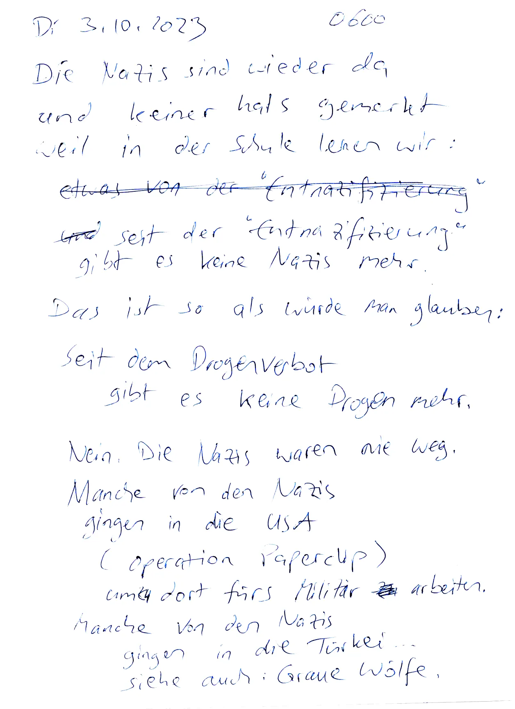
Ich werde nicht immer hier sein
Meine feinde wollen mich Zensieren wegsperren umerzichen schlagen töten
weil meine Hypothese ist “zu radikal” und bevor sie mir Recht geben Wollen sie lieber mich kaputt machen um ihr altes System zu retten.
Sozialdarwinisten sehen sich als “Herrenmenschen” und “die Anderen” also Typen 12 sind “Sklavenmenschen” die man ausbeuten oder töten darf, Typen 34 = Kurzsichtig liberal (Typ 3) und weitsichtig konservativ (Typ 4) und Typen 12 = weitsichtig liberal (Typ 1) kurzsichtig konservativ (Typ 2)

Mi 4.10.2023 2200
Mir hilft auch keiner
- Alle sind überarbeitet
- Alle sind überfordert
- Alle laufen am Limit
- Keiner hat Freizeit
- Keiner hat Freiraum
Deswegen muss alles so ineffizient sein damit die Menschen ihre Energie verschwenden
Und für Arbeit will jeder Geld haben weil wer hat schon den Luxus dass er zu viel Geld und feit hat?

Was würde mir helfen?
Leute die für mich arbeiten
Leute die mir Arbeit abnehmenAlso
- Bücher drucken
- Bücher verteilen
- Texte schreiben
- Bilder zeichnen
- Texte übersetzen
- Werbung machen
Aber auch:
Experimente organisieren
also Menschen zusammen bringen
und das “Pallas-Muster” ausprobieren.
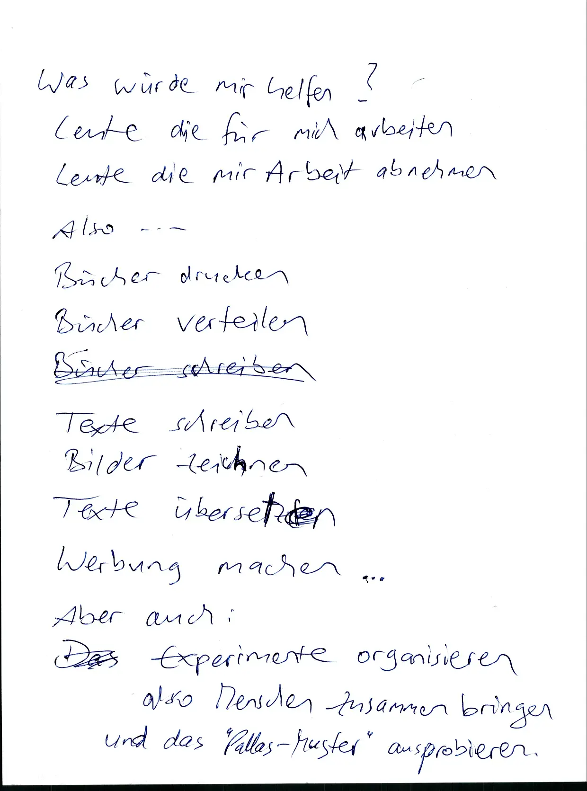
Mi 4.10.2023 2230
Noch “unbewiesene” Verarschungen:
- Elektrosmog
- Smartmeter
- Solarstrom
- Windstrom
Im Zweifel für den Kleineren
Der übliche Grundsatz “Im Zweifel für den Angeklagten” ignoriert die Tatsache, dass Größere viel leichter so einen Zweifel erzeugen können.
Also Klassenjustiz: Größere sind gut, Kleinere sind böse.

Do 5.10.2023 2200
Betrug ist unterschwellig
Wer Betrug verkaufen will der muss vorhee überschwellige Betrugsmaschen etablieren als Ablenkung damit später die echten Betrugsmaschen relativ unterschwellig sind.
Also die Opfer werden abgehärtet damit sie weniger sensibel sind damit sie ihre Feinde nicht mehr sehen.
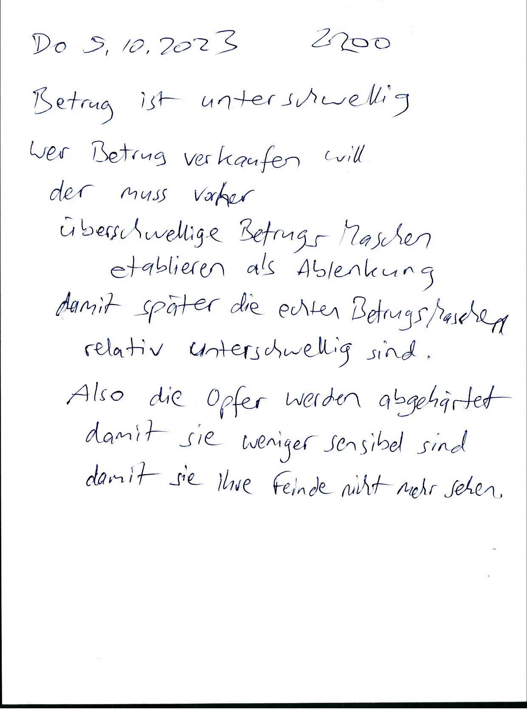
Do 5.10.2023 2300
Billige Energie hat keine Zukunft
200 Jahre zurück gehen
- Staff Erdöl aus Persien hatten wir Brennholz aus unserem Wald.
- Statt Plutonium aus Afrika hatten wir Brennholz.
- Statt großen Schulen hatten wir Dorfschulen.
Freiwilligkeit
Eigenmotivation
Ich finde die Frage wichtig: wer sind meine Freunde ?
Also wie müssen wir Beziehungen gestalten damit stabile Gruppen entstehen?
Und ich hoffe dass auch andere Menschen diese Fragen wichtig genug finden um mein Buch zu lesen.
Aber es soll freiwillig sein, wer keine Lust hat der soll es lassen.

- Mystik
- Ignoranz
- Nicht wissen wollen
- Einfache Antworten
- Billige Tricks
- Rhetorik
- Schöne Lügen
- “Wir werden es nie wissen”
- Blind
- Taub
- unsensibel
- “Rational dumm”? (Typ 4)
Fr 6.10.2073 0600
Die öffentlichkeit und
Der UntergrundIn Großstaaten:
Die Öffentlichkeit wird belogen.
In der Öffentlichkeit herrscht die Lüge.
Weil dieser “Kampf gegen die Natur” geht nur mit Lügen, also Betrug, Gewalt (passive Gewalt, soft power)
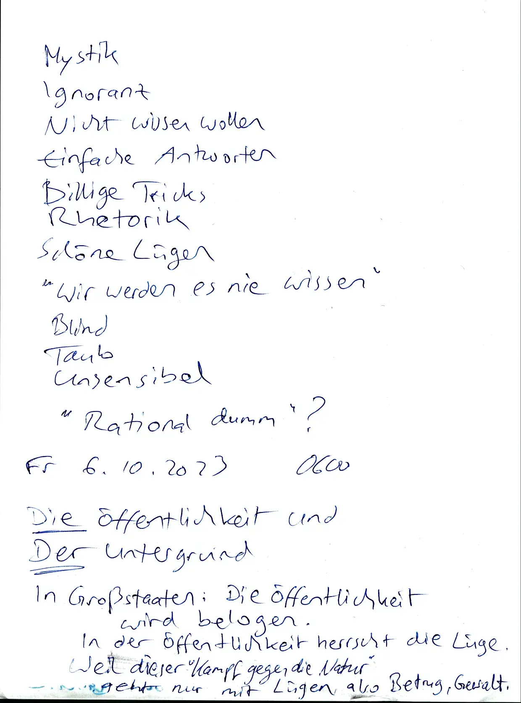
6.10.2023 0630
Natur oder Kunst
Grundsätzlich gilt:
Alles kann zwei Gründe haben: Natur oder Kunst, Körper oder Geist.
Agnostik ist Tolerant “Die Anderen” glauben wirklich was sie glauben und jeder hat seine Gründe.
Zu sagen “du bist ja dumm” ist zwar ehrlich aber ein Widerspruch zum Anderen
er fühlt sich schlau weil Jeder fühlt sich schlau Jeder fühlt sich im Recht.
Auch das ist ein Problem beim Pazifismus. Wir machen keine Vergleiche also “keine Experimente” also “Lass uns nicht streiten”. aber so finden wir nicht die Wahrheit.
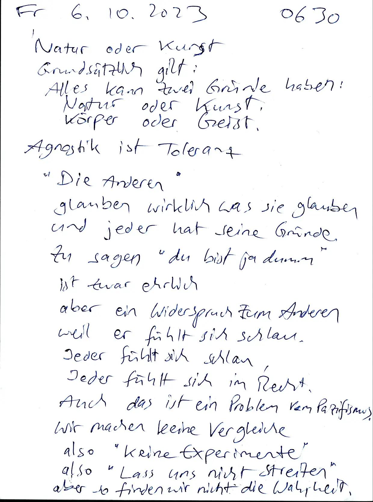
Elektrosmog
Laptops bediene ich immer mit externer Tastatur weil direkt unter interne Tastatur liegt der Prozessor also ein Störsender.
Ich hatte Mal eine Wespe oder Biene oder Hummel in meinem Zimmer und die hat sich ganz absichtlich immer auf die interne Tastatur gesetzt auf die linke Hälfte der Tastatur da wo der Prozessor drunter liegt.
Ich glaube, dieses Tier wollte Suizid. Deswegen ist es voll bewusst an diesem Störsender gegangen damit das Tier schneller stirbt.
Nach ein paar Minuten war es dann auch tot davon.
Ich hab auch ein Foto

Fr 6.10.2023 0700
Wie funktioniert Betrug
Gesinnungsethik
Es ist doch gut gemeint, Also das schlechte Ergebnis wird versteckt, wird unsichtbar gemacht.
Eine vorsätzliche Schädigung wird geleugnet und man sagt immer es war gut gemeint also wenn etwas Schlechtes passiert dann nur fahrlässig. also unabsichtlich. also “das wollten wir nicht”.
Betrug braucht einen guten Ruf.
Dieser gute Ruf wird eine Zeit lang aufgebaut und dann wird er ausgenutzt.
And bekannt als “Exit Scam”. oder als “Selective Scamming.

Idiokratie ist hier und jetzt:
Wir sind schon mitten drin in der Idiokratie. Mike Judge hat seinen Film als eine Zukunftsvision präsentiert aber das it es nicht. Der Film Idiocracy ist eine Systemkritik gegen das aktuelle System.
Sozialisten sind Idioten.
Die “Idioten” sind die Sozialisten die sich aggressiv vermehren und dann eine “Mehrheitswahl”fordern. Auch bekannt als “Demokratie: Schlaue Menschen sind”antisozial” also Einzelgänger, Privatmenschen. Und jeder Sozialismus macht den Antisozialen das Leben zur Hölle zum Beispiel durch Kinderklau.

Fr 6.10.2023 0730
Lyrics: Ich muss gar nichts
(Großstadtgeflüster?)
Meine Theorie über Beziehungen ist auch ein Ausbruchsversuch aus der kaputten Beziehung zu meiner Ex-Frau.
Warum ist diese Deziehung “kaputt”?
Weil sie ist dumm und lässt sich immer wieder verarschen, Ich bin schlau und durchschaue diese Angriffe aber ich kann Nichts machen weil in dieser Beziehung habe ich nichts zu sagen.
Ich glaube das ist so eine “Monolog” Beziehung: ich verstehe alles von ihr sie versteht nichts von mir.

Gemeinsame Freunde
Meine Lösung dafür sind Gemeinsame Freunde und eine Vierer-Gruppe, wo Information im Kreis fließt.
In dieser Vierer-Gruppe gibt es vier Monolog-Beziehungen.
Partnertausch in Vierer-Gruppen.
Ich bin M1.
Sie ist F2.TODO image
F2 F1 v ^ M1 M2 v -------- ^ F2 < F1 M1 → M2

Sa 7.10.2023 0800
Tim Kellner M3
Typen 24 Туреn 13 Dumm und Glücklich? Schlau und traurig? Weiblich in traditioneller Alchemie Männlich Sklavenmoral? Herrenmoral? Weibermoral Männermoral Politisches Spektrum
TODO image
gemäßigt = oben, öffentlich, gesellig
gemäßigt Links 2
3 gemäßigt Rechts
Links
Linksextrem
Rechts
Rechts extrem
extrem unten, privat, Stubenhocker
Der Kampf gegen Rechtsextreme ist eine Fortsetzung vom Christentum (Sklavenmoral) also von Römischem Staatskult
TODO image
2 402 302 1
Typ 2 ist das gemeinsame Ideal also der gemeinsame “Gott” von Typen 3402. Typ 1 ist der gemeinsame Gegner also der gemeinsame “Teufel”.

TODO image
Mutter 2 402 302
Typen 3402
Mütter werden Vergöttert Söhne werden geopfert
Matriarchat Mater = Mutter Herrschaft der Mutter “Römisches Kreuz”
Das Sohn
Das Gegenteil von Mutter ist Sohn! Also der Gegner vom Matriarchat ist nicht das Patriarchat (Pater = Vater = Typ 4) Sondern “die Herrschaft des Sohnes”
302 402 12
Tochter spielt Mutter = Frau = extrem weiblich
Vater spielt Mutter = Alter = extrem alt
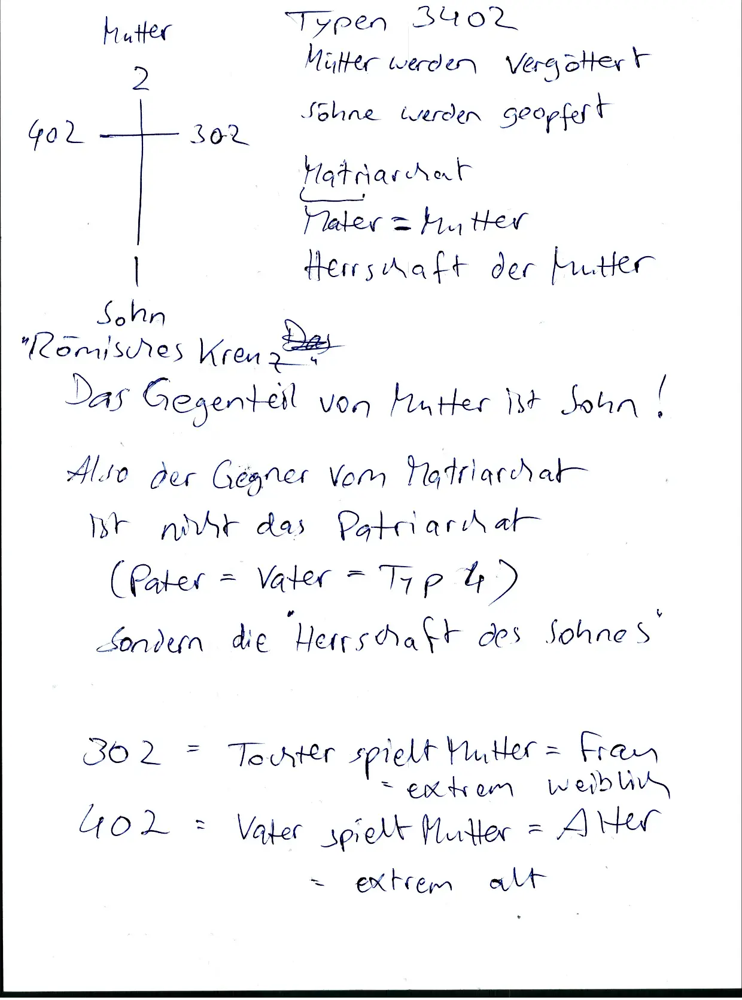
Sa 7.10.2023 0900
Wir sind abhängig und erpressbar und unsere Vorgesetzten tun uns immer wieder einreden: das ist gut so weil nur durch diesen “Druck von oben” kann dieses System funktionieren
aber wer sagt dass dieses System gut ist?
Wir sind abhängig weil unsere Vorgesetzten kontrollieren unsere Versorgung: Strom, Wasser, Heizung, Essen, Abwasser, Müllabfuhr, …
wir sind expressbar well unsere Vorgesetzten können uns die Versorgung verweigern wenn wir zu “böse” sind. “Ich dreh dir den Hahn zu” (den Geldhahn) heisst es im Film Werner Beinhart

Feudalismus
weil letztendlich sind wir immer noch (wie schon immer?) (Naturkonstante?) im Feudalismus
- also Zwei Klassen Gesellschaft
- also Oligarchie
- also eine Symbiose von Herren und Sklaven.
- also Großgrundbesitzer und Plantagenarbeiter
weil warum auch nicht.
Eine Sache die mir daran stört: Es gibt zu viele Sklaven und zu wenige Herren. weil Profitmaximierung. deswegen Pazifismus.
Ich glaube statt “Herren und Sklaven” sollten wir sagen “Soldaten und Bauern” dann macht es mehr Sinn dass beide gleich wichtig sind und dass wir gleich viele von beiden brauchen.

Sa 7.10.2023 2200
Eine “Demokratie” mit Parteiverboten ist keine Demokratie.
So 8.10.2023 0600
Ein “freier” Markt mit Berufsverboten ist kein freier Markt.
Ideale sind leere Versprechen
Paradox der Toleranz. Sozialisten sind nur tolerant für andere Sozialisten.
Brainstorming geht nur dann wenn ich meine Einfälle aufschreibe weil dann kann ich vergessen und neue Einfalle generieren. “Das merk ich mir” ist der Feind vom Brainstorming.
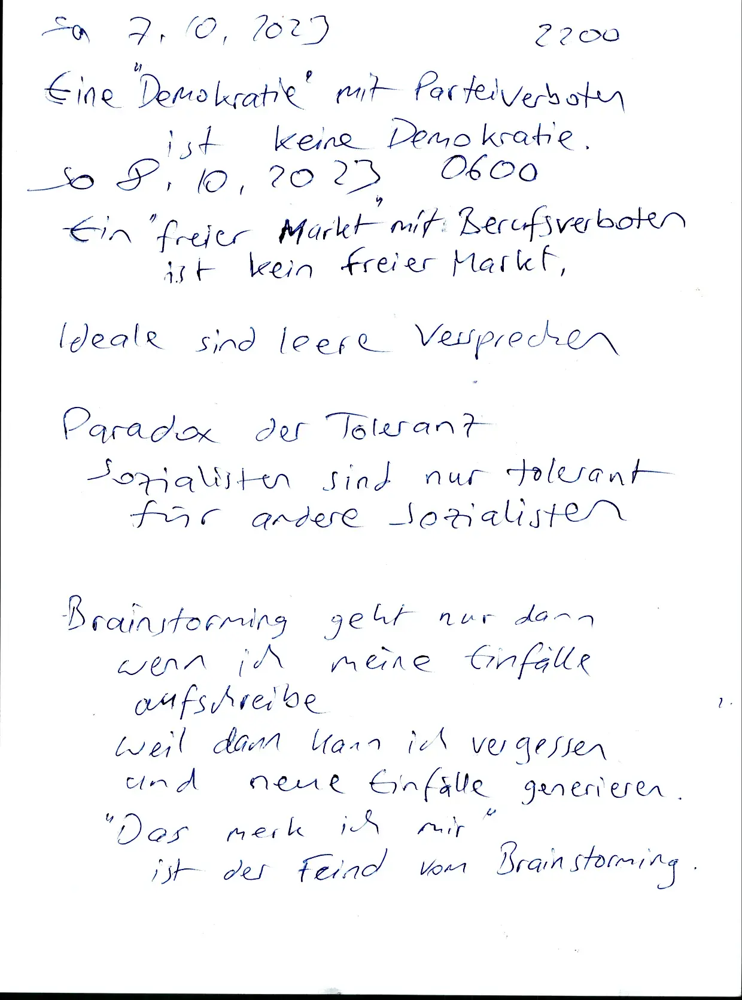
TODO digitale Bücher analogisieren also Drucken → SVG PDF Jam mit schönem Cover und schönem Layout
Bullen gehören nicht zu meiner Zielgruppe. Bullen sind nützliche Idioten für das alte System. Bullen stehen für Gewaltmonopol also Zentralismus und Großstaat. Ich will das Gegenteil. Bullen sind ein Sicherheitsdienst für die Elite.
Menschen die schwere Sprachen lernen füllen sich schlau aber eigentlich sind sie dumm weil sie ihre Kinder quälen mit schwere Sprache: Chinesisch, Arabisch, Russisch, …

So 8.10.2023 0700
Git Filter Branch
What went wrong? why do all commits have new hashes?
In staatlichen Schulen leren wir “Wir können alle Probleme im Kopf lösen” aber Wissenschaft geht nicht so, Wissenschaft fordert: Ergebnisse müssen reproduzierbar sein. Wenn ich etwas glauben muss und nicht prüfen kann, dann ist dieses Etwas ein Teil von Religion.
Beispiel: Hypothese: “Es gibt ein Leben nach dem Tod”. Wenn ich diese Hypothese prüfen will dann muss ich sterben, aber dann kann ich mein Ergebnis nicht teilen.
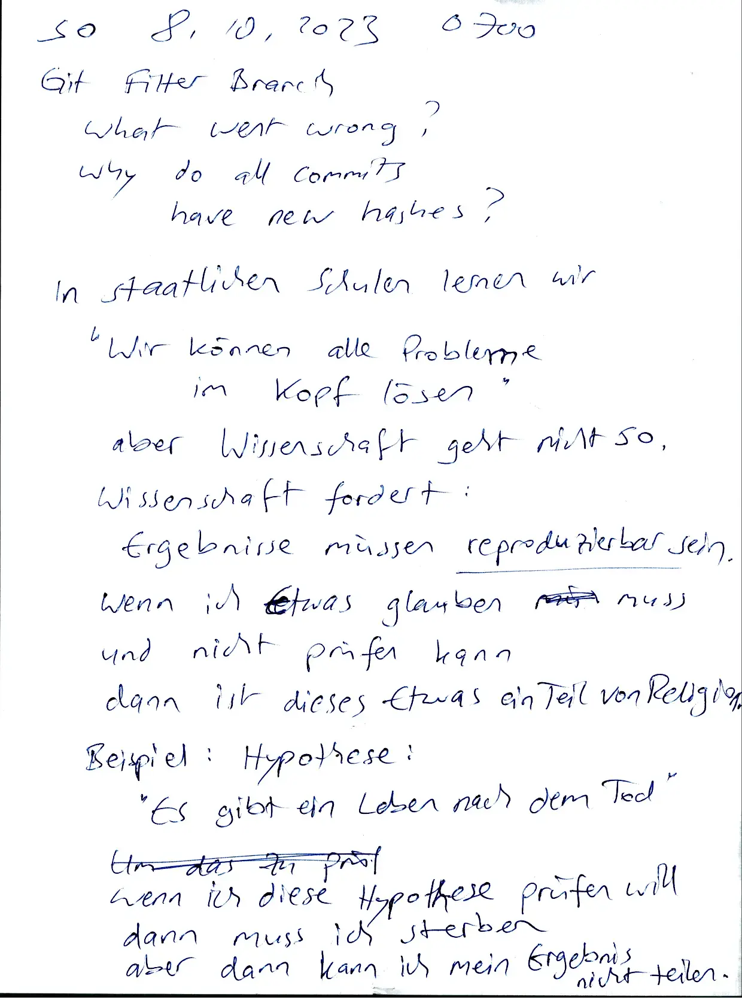
Rationalisieren
Schönreden von Scheisse
Staatsfeinde
Jeder Sozialismus hat seine Staatsfeinde:
Bei uns sind das “Rechtsextreme”
In Indien sind es die Dalid also die “Unberührbaren” also die man nicht anfassen soll
In der kommunistischen Diktatur Waren es die “Asozialen”
Im Sorgerecht beim Familiengericht und beim Jugendamt sind es “Erziehungsunfähige”
In einer Demokratie (Diktatur der Mehrheit) sind es “Antidemokraten” also Minderheiten
In einem Imperium der Zivilisation sind es primitive Naturvölker.


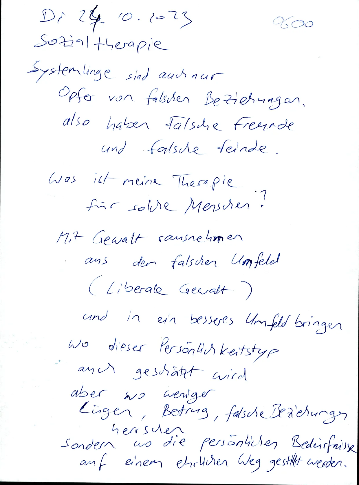

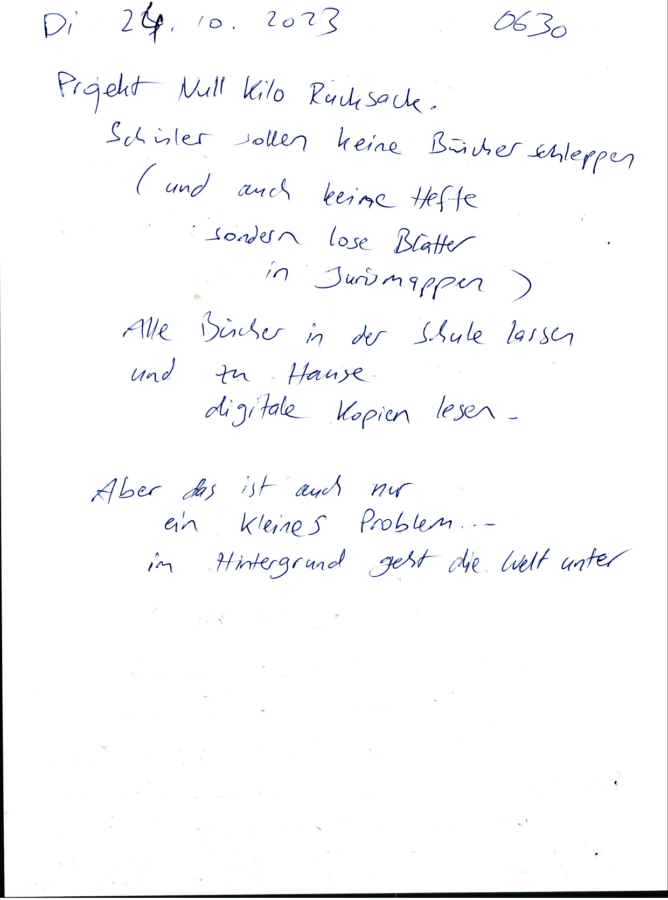


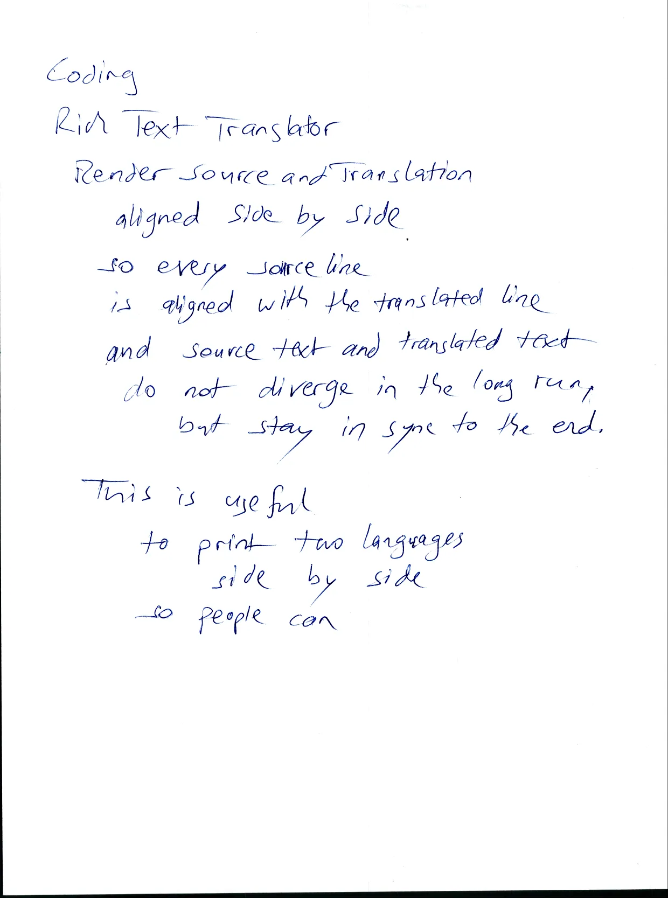


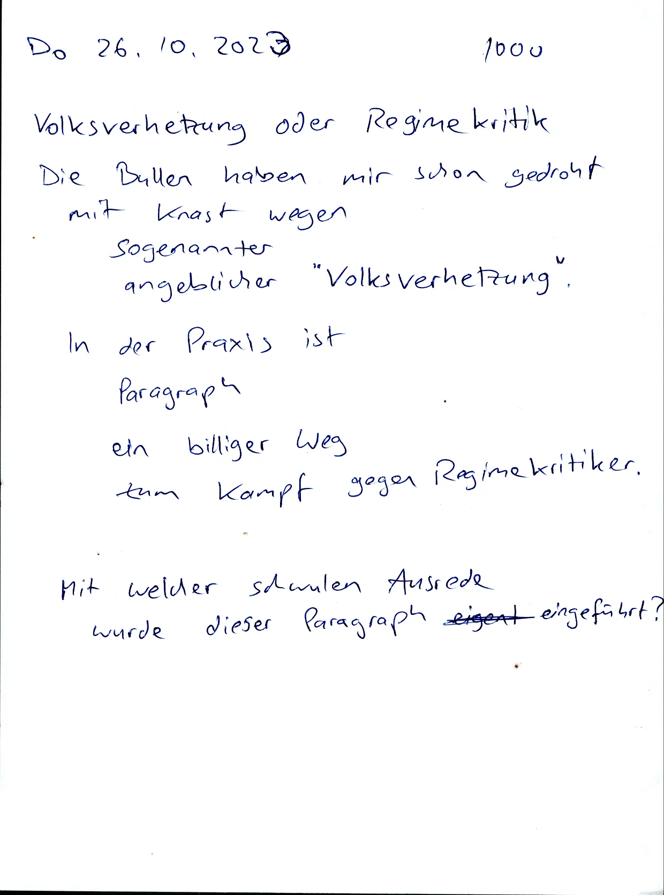
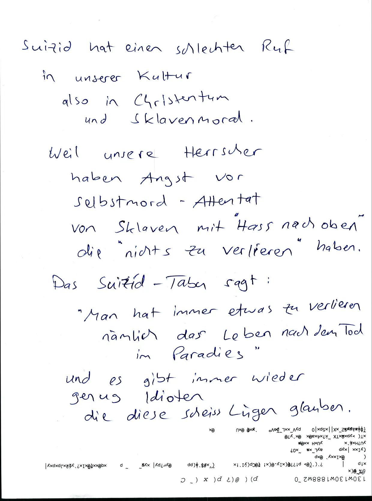